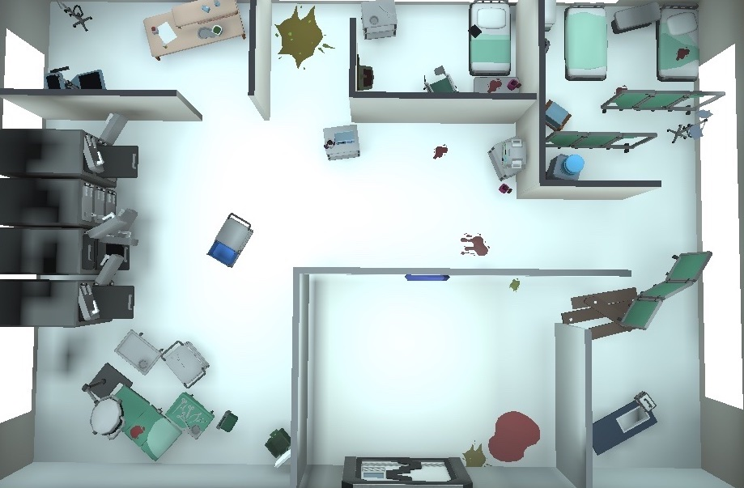
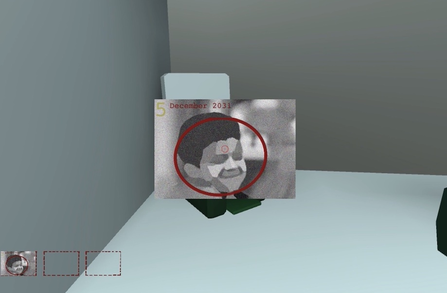
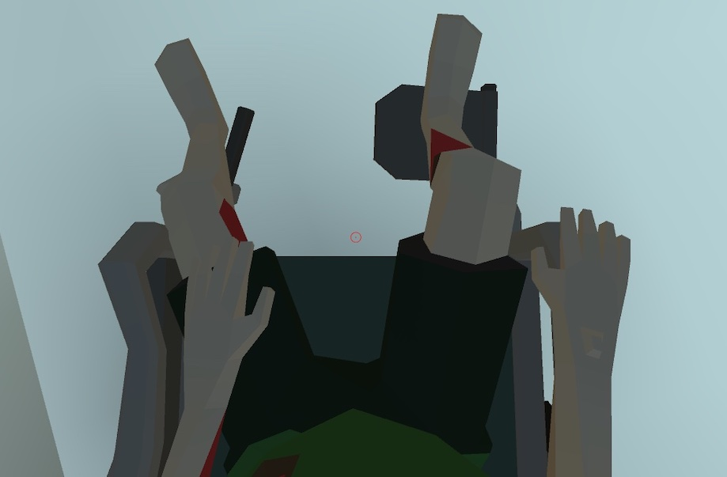

<div id="portfolio-page" class="portfolio-page-content">
    <div class="container">
        <div class="portfolio-nav">
            <div id="portfolio-close-button" class="portfolio-close-button"><a href="#portfolio"><i
                        class="fa fa-close"></i></a></div>
        </div>
        <div class="portfolio-title text-center">
            <h1>Escape Room: Watching</h1>
        </div>
        <div class="row">
            <div class="col-sm-7 col-md-7 portfolio-block">
                <div class="owl-carousel portfolio-page-carousel">
                    <div class="item"></div>
                    <div class="item"></div>
                    <div class="item"></div>
                </div>
                <div class="portfolio-page-video embed-responsive embed-responsive-16by9">
                        <iframe class="embed-responsive-item" src="https://player.vimeo.com/video/649562094?h=8f3d82595d" width="640" height="564" frameborder="0"></iframe>
                        <!-- allow="autoplay; fullscreen" allowfullscreen -->
                </div><!-- <div class="portfolio-page-image"></div>-->
                <script
                    type="text/javascript">jQuery(document).ready(function ($) { $('.portfolio-page-carousel').owlCarousel({ smartSpeed: 1200, items: 1, loop: true, dots: true, nav: true, navText: false, margin: 10 }) });</script>
                <!-- Tags -->
                <div class="tags-block">
                    <!-- <div class="block-title">
                        <h3>Tags</h3>
                    </div> -->
                    <ul class="tags">
                        <li><a>VirtualReality</a></li>
                        <li><a>GameDesign</a></li>
                        <li><a>GameDevelopment</a></li>
                    </ul>
                </div><!-- /Tags -->
                <br>
                <ul class="project-general-info">
                    <li>
                        <p><i class="fa fa-book"></i><a
                                href="https://six-map-c6d.notion.site/Escape-Room-Watching-46b5e3962e254632bed3911c9d805ada"
                                target="_blank">Documentation</a></p>
                    </li>
                    <li>
                        <p><i class="fa fa-code"></i>Unity3D, C#, Google Cardboard</p>
                    </li>
                    <li>
                        <p><i class="fa fa-user"></i>Benjamin Pang, Chris Chen, Keyin Wu</p>
                    </li>
                    <li>
                        <p><i class="fa fa-calendar"></i>May, 2020</p>
                    </li>
                </ul>
            </div>
            <div class="col-sm-5 col-md-5 portfolio-block">
                <p class="testimonial-text"><i>It is an immersive VR game that enables the player to experience in a 
                    special perspective of a disabled person. As the player explores our world, he is supposed to 
                    feel the anomalies and get into our story that it’s essentially a machine-dominated world. Our 
                    protagonist, as a human, is only a research object and is monitored all the time. The design is 
                    all centered on this setting.</i></p>
                <!-- Project Doc -->
                <div class="block-title">
                    <h3>Background</h3>
                </div>
                <p class="text-justify">The game designed for Google Cardboard environment is set in a hospital. Based on 
                    the story, we go with the psychological horror style to build the space. Instead of screams and ghost 
                    faces, we use multiple sound effects to create the skeptical and tense atmosphere. The player will 
                    have to be restricted on a wheelchair while moving around and seeking clues. For one thing, it is to 
                    meet the conditions of using a Google Cardboard. For another, the wheelchair restriction can give the 
                    user different experience on moving around the space and pushing or interacting with objects.
                </p>
                <p class="text-justify">But also, since we didn’t describe the background obviously by words, users are 
                    welcome to relate different things during in-person experience and we are open to other possible 
                    interpretations if any. Based on our indicative designs, different understandings can also add to 
                    the depth of our work.
                </p>
                <div class="block-title">
                    <h3>Contribution</h3>
                </div>
                <p class="text-justify">Scene Setting, Sound Effect Design, Story Design, 
                    Graphic Design, Interaction Coding, Play Testing
                </p>
                <!-- /Project Doc -->

                
                <!-- Share Buttons -->
                <!-- <div class="btn-group share-buttons">
                    <div class="block-title">
                        <h3>Share</h3>
                    </div><a href="#" target="_blank" class="btn"><i class="fa fa-facebook"></i></a><a href="#"
                        target="_blank" class="btn"><i class="fa fa-twitter"></i></a><a href="#" target="_blank"
                        class="btn"><i class="fa fa-dribbble"></i></a>
                </div> -->
                <!-- /Share Buttons -->
            </div>
        </div>
    </div>
</div>